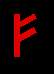
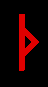
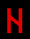
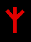
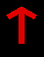
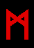
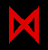
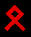

FEHU
Germánsky: Fe (Fehu)
Goticky: Faihu
Skandinávsky: Fé
Anglosasky: Feo,
Feoh
Islandsky: Fé
Norsky: Fe
# 1. Tato runa začíná abecedu Futhark a je první ze tří ættir. Charakterizuje tažné zvíře. Otrocké, hloupé, pomalé, ochočené a mírné. Zbabělé. Jedná se o vysílací runu používanou v magii. Růst, putovat, ničit.
Pozitivní aspekty; bílá magie:
Bohatství, majetek, pocty, vlastnictví,
peníze, expanze. Moc nad svým okolím, nárůst bohatství; plodnost, mobilita.
Černá magie: Způsobuje zbabělost, otupělost, láme ducha, svazuje nepřítele; vyvolává v nepříteli strach a závislost.
ÜRUZ,
AUROCHS
Anglosasky: UR
Germánsky: Uraz (Uruz)
Goticky: Urus
Skandinávsky: Úr
Anglosasky: Ur
Islandsky: Úr
Norsky: Ur
# 2. Aurochs je druh divokého vola, který žil v evropských lesích. Do roku 1600 byl lovením vyhuben. Tato runa představuje kosmické semeno, počátky a původ. Má mužskou povahu a dodává sílu, vytrvalost, odolnost a atletické schopnosti. Je runou odvahy a smělosti, svobody a vzpoury. Ur
představuje roh nebo vztyčený falus, vzkříšení, život po smrti. Příchod, bytí a odchod(smrt).
Bílá magie: Vyvolává akci, sexuální
sílu. Svoboda.
Černá magie: Používá se k ohrožování a ničení.
Magie: přenos energií, používá se k promítání nebo čerpání energie. Opakované použití této runy postupně zvyšuje množství energie, které je člověk schopen zvládnout v každém daném okamžiku. Pomáhá při růstu vlastních zásob energie. Při používání s jinou runou, působí na zvýšení síly každé runy, s níž je použita, ať už v dobrém či zlém. Adepti mohou kombinovat síly této runy se silami runy Isa (oheň a led), což se však nezasvěceným může stát osudným. Zelená a třpytivě zlatá barva se s energiemi této runy dobře doplňují.

THURISAZ(Trn)
Germánsky: Thyth (Thurisaz)
Goticky: Thauris
Skandinávsky: Þurs
Anglosasky: þorn
Islandsky: Þurs
Norsky: Thurs
#3. Runa řezání, ostrosti a bolesti. Brutální síla, ničivá moc chaosu a zkázy. Také smrti a regenerace, proměny a rozpadu bariér. Síla této runy je divoká a je zapotřebí silné mysli/vůle, aby jí člověk mohl řídit. Napomáhá energii ostatních run, s nimiž je používána, aby se projevily v realitě. Podobně jako blesk Thorr přináší energii berserkera. Takto divoké energie by se měly používat pouze ve válce nebo při útoku. Dokáže vyvolat a vést bouře a usměrňovat blesky. V mnoha německých pohádkách, jako je např.
„Šípková Růženka“ bodnutí trnem, špendlíkem nebo vřetenem přivolá na oběť kouzlo. Krvavý kámen (heliotrop) byl s touto runou používán při vyvolávání bouřek. Hematit používaný s touto runou dokáže chránit před elektromagnetickými energiemi a je
proto užitečný při odvracení kleteb. Použití této runy se špičatým krystalem soustřeďuje energie a promítá je.
Černá magie: Přináší zkázu a zmatek. Thorr se používá při ničení nepřátel a při kletbách. Používá se k ovládnutí jiného člověka nebo k učinění člověka bezbranným.
Bílá magie: Runa léčení. Posiluje moudrost, odvahu, fyzickou sílu, nezávislost a
vůdcovství.
ANSUZ (Bůh)
Germánsky: Aza (Ansuz)
Goticky: Ansus
Skandinávsky: Óss, Áss
Anglosasky:
Aesc, (Os, Ac)
Islandsky: Óss, Áss
Norsky: As
#4. Runa síly řeči. Ničí tyranii; „Tvá duchovní síla tě osvobozuje“ Řád, opak chaosu, tvůrčí inspirace, magická řečnická schopnost a přesvědčování druhých a publika prostřednictvím řeči. Otevírá kanály sebevyjádření a překonává překážky všeho druhu. Používá se při odstraňování vázání. Pomáhá při zlepšování psychických a magických schopností. Používá se také při invokacích. Používá se spolu s lapisem lazuli při komunikaci s démony.
RAIDHO (Jízda na koni, cestování)
Germánsky: Reda (Raidho)
Goticky: Raida
Skandinávsky: Reið, Reiðr
Anglosasky: Rad
Islandsky: Reið
Norsky: Reid, Reidr
#5. Runa cestování, cest a fyzické vytrvalosti. Tato runa se používá jako amulet pro cestovatele, což zahrnuje i astrální cestování a Reidh působí jako průvodce mrtvých na jejich cestách v podsvětí. Jedná se také o runu stěhování, například při změně bydliště. Reidh také znamená hledání a snažení se, vykročení do neznáma. Z magického hlediska tato runa, když jsou její energie zaměřeny na jiného člověka, způsobí, že ten člověk bude neklidný a nespokojený. Vytváří změny v životě k dobrému či zlému v závislosti na ostatních runách použitých spolu s ní v práci. Reidh je sluneční runa, neboť také symbolizuje vůz Amona Ra, Egyptského boha Slunce a představuje osminásobný cyklus Velkých sabatů. Reidh také pomáhá při astrálním cestování. Reidh je runou rytmu a hudby a pomáhá člověku lépe organizovat svůj času. Tato runa představuje spravedlnost a podstatu zákona, zatímco Tyr je písmem zákona. Může být použita při rituálech pro dodání síly pohybu - bubnování, tanci, tleskání atd.
KENAZ (Pochodeň)
Germánsky: Chozma (Kenaz)
Goticky: Kaun
Skandinávsky: Kaun
Anglosasky:
Cen, Ken
Islandsky: Kaun
Norsky: Kaun
#6. Runa světla. Světlo duše; také intelekt. Poutník na cestě do podsvětí nesl Kaun, aby mu osvětloval cestu a vedl ho. Tvar této runy je tvar, připomínající deltu pro hladký let a také pronikání. Magicky může být tato runa použita pro intelekt a pronikání do věcí, protože nese energii. Také zvyšuje uvědomění a dává vhled. V černé magii se používá k podněcování hlouposti a působí tak, že oběť zůstane nevědomá. Tato runa také představuje vředy, záněty, otoky a vřídky. Používá se k ovládání a spoutání sexuálních energií a při práci se sexuální magií. Často se používá s dalšími ohnivými runami a používá se k uvolnění ducha do říší moci. Tuto runu lze použít k usměrňování a ovlivňování emocí druhých. Propůjčuje charisma, které je spojeno se sexuálními energiemi. Je užitečná při zvedání kundaliní. Ohnivé acháty a opály lze s touto runou používat, zejména při práci se sexuální magií.
GEBO (Dar)
Germánsky: Geuua (Gebo)
Goticky: Giba
Skandinávsky: Gipt, Giöf
Anglosasky: Geofu (Gyfu)
Islandsky: Gjöf
Norsky: Giof
#7. Jedná se o runu oběti a darování. Něco, co má osobní hodnotu, dáno dobrovolně, jako je naše krev, když se rozhodneme runy tímto způsobem posvětit. Jedná se o runu zasvěcení, kdy přinášíme osobní oběti, abychom získali poznání, moc a moudrost. Žádná bolest, žádný zisk.
Z magického hlediska je Gipt nositelem
darů. Gipt souvisí se svatbami a spojenectvím. Gipt se používá také v sexuální magii a vázacích kouzlech. Může být použit k připoutání druhé osoby k nechtěnému závazku a lze ji použít při sesílání milostných kouzel. Smaragd a nefrit jsou drahokamy používané s touto runou. Při použití v černé magii přináší tato runa bolest a oběť ze strany dotyčného, bez odměny. Při použití s runou Isa je tato kombinace mocná pro vázání nepřátel.
WUNJO
Germánsky: Uuinne (Wunjo)
Goticky: Winja
Skandinávsky: Vend
Anglosasky:
Wynn
Islandsky: Vin
Norsky: Wynn
#8. Wunjo je runou poct a odměn. Naše úsilí je odměněno. Vend je blaženost splývající se světlem. Autorita, respekt a síla. Tato runa je vynikající pro zahnání deprese. Pomáhá sjednotit členy rodiny a napravit přátelství. Boří bariéry mezi člověkem a ostatními. Při směrování pro černou magii, lze tuto runu použít k navození přehnané sebedůvěry a důvěry v nesprávné věci u druhých, což vede k jejich pádu. Vend je také runou léčení, protože spojuje léčení mysli s léčením fyzického já. Chrání před nemocemi. Je vhodná pro práci se srdeční čakrou. Topaz posiluje tuto runu, stejně jako růženín. Je dobrá pro zvýšení sebevědomí a sebeúcty.

HAGL (Kroupy)
Germánsky: Haal (Hagalaz)
Goticky: Hagl
Skandinávsky: Hagall
Anglosasky: Hægl
Islandsky: Hagall
Norsky: Hagall, Hagl
#9. Tato runa představuje kroupy. Nedobrovolná oběť bez odměny; runa utrpení a nespravedlnosti. Runa zkázy, katastrofy a násilí. Tato runa se používá hlavně v černé magii při sesílání zkázy v podobě jakýchkoli run, co jsou s ní použity. Přináší násilnou ztrátu a bolest. Hagl je runa dokončení a čísla devět. Devítka je největší německé číslo moci a je také číslem Satana, neboť se rovná počtu hlavních čaker.
NAUTHIZ (Potřeba)
Germánsky: Noicz (Nauthiz)
Goticky: Nauths
Skandinávsky:
Nauð, Nauðr
Anglosasky: Nied (Nyd)
Islandsky: Nauð
Norsky: Naudr, Naud
#10. Nauthiz je runou vytrvalosti a vůle. Duševní síla vydržet. Představuje temnou noc duše. Je spojena s runou Hagl. Při použití v bílé magii tato runa dává vzdor a sílu pokračovat, když se zdá, že je veškerá naděje ztracena. Je to runa přežití a neohroženosti tváří v tvář smrti. Pokud je tato runa zaměřena na druhého, může mu dodat duchovní sílu pokračovat a vytrvat tváří v tvář katastrofě. Při použití v černé magii přináší utrpení a strádání. Naudh je runa tření a odporu. Runa vyhánění a očišťování ohněm. Naudh lze použít v protikouzlech. Rozvíjí vůli a soběstačnost. Runa zkoušky a testování. Obsidián je drahokam používaný s touto runou. Obsidián je také drahokamem planety Saturn, která přináší těžkosti a vytrvalost.
ISA (Led)
Germánsky: Icz (Isa)
Goticky: Eis
Skandinávsky: Íss
Anglosasky: Is
Islandsky: Íss
Norsky: Is
#11. Isa je runou vázání. Představuje lstivost a plíživost a používá se při operacích, při nichž chce člověk postupovat nepozorovaně; Iss propůjčuje neviditelnost. V přírodě se led plíží po zemi, tiše mrzne a znehybňuje vše v jeho cestě. Nevědomí se stávají jeho obětí. Z magického hlediska je Iss runou vázání, zabránění jednání skrytými prostředky. Dokáže zastavit plán a zabránit něčemu se rozvíjet. Používá se k utajení a může způsobit, že oběť si nebude vědoma blížící se osobní katastrofy do té míry, že na jakýkoli pokus o akci bude příliš pozdě. Používá se také k zabránění jakékoliv akce a může zhatit plánovanou činnost. Isa zmrazuje akci a je runou chladu, pustého klidu a ticha a smrti. Isa je přesným opakem Fehu. Tak jako je Fehu runou pohybu, tak Isa je runou vázání.
Při použití při rituálech proti druhému přináší neplodnost, brání prosperitě, způsobuje deprese a slouží jako překážka v jednání. Může být použita k vyvolání paralyzujícího strachu nebo posedlosti a k zabránění nebo zastavení pohybu, jak růstu, tak rozpadu. Pozitivnější je, že tato runa je užitečná při meditaci prázdnoty, protože působí ke zklidnění a také pomáhá při soustředění, přináší klid a vedení. Je třeba dávat pozor, protože tato runa může také způsobit otupělost a/nebo posedlost uživatele. Isa působí na zklidnění hysterie, hyperaktivity a neklidu. Často se používá v kouzlech pomsty a obrany a
pomáhá soustředit vůli uživatele. Při použití s jinými runami, působí vázáním a stíněním energií a zabraňuje jejich vzájemnému ovlivňování.
JERA (Rok)
Germánsky: Gaar (Jera)
Goticky: Jer
Skandinávsky: Ár
Anglosasky:
Ger (Jara)
Islandsky: Ár
Norsky: Jara, Ar
#12. Jera je runou cyklů a je symbolem sklizně, kdy jsou úsilí sázení a práce na polích odměněny úrodou. Ar představuje cykly změn. Životní cykly, lunární cykly, cykly ročních období a změny. Ar je v protikladu k Iss, kde se vše zastavuje. Znamená návrat Slunce a přináší akci. Ar symbolizuje vír cyklické energie; osminásobné kolo života, bod uvnitř kruhu, což je glyf pro Slunce znamenající regeneraci. Při použití v magických operacích může obrátit osobní štěstí. Stejně jako tarotová karta kolo štěstí, může Ar zvrátit okolnosti, takže neštěstí je nahrazeno štěstím a naopak. Runa trpělivosti a uvědomění, pohybující se v souladu s přírodními cykly. Tato runa je vynikající pro práci s přírodou a je runou plodnosti. Ingwaz je zasazené semínko, Berkano je země, která ho přijímá, a Jera je růst a sklizeň. Runa dlouhodobého plánování a vytrvalosti a zajišťuje úspěch plánů. Tato runa je také užitečná, protože slouží jako vodítko pro správné načasování rituálů, zejména iniciačních. Při použití v černé magii, může tato runa zhmotnit nejhorší možné aspekty jednotlivcova wyrdu a rozvíjí síly sebedestrukce. Kamenem je mechový achát.
EIHWAZ
Zvuk: Ë
Germánsky: Ezck (Eihwaz)
Goticky: Eiws
Anglosasky: Yr
(Eoh)
Norsky: (Eo)
#13. Používá se v nekromancii (komunikace s mrtvými). Je to runa smrti a mocí nad mrtvými. Eihwaz posiluje vůli a lze ji použít při regresi do minulých životů k získání znalostí a moudrosti z minulých životů. Představuje sílu kundaliní. Tato runa chrání duši při všech druzích těžkostí. Stejně jako Pluto, je runou transformace skrze smrt a znovuzrození a vládne hluboké a silné transformaci na všech úrovních. S touto runou se pužívá záhněda. Runu i zmíněný kámen lze použít k aktivaci a pozvednutí kundaliní.
PERTHRO
Germánsky: Pertra (Perthro)
Goticky: Pairthra
Skandinávsky: Perð
Anglosasky: Peordh (Pertra)
Islandsky: Perð, (Plástur)
Norsky: (Pertra)
#14. Perthro je runa používaná při věštění. Pomocí této runy lze získat znalosti a moudrost ostatních run. Tato runa slouží k ochraně proti ničivým silám některých run. Prostřednictvím Perthro můžeme intuitivně objevit ztracené znalosti všech run. Perthro je runou meditace. S touto runou se používá kámen onyx.

ALGIZ
Germánsky: Algis, Algiz nebo Elhaz
Goticky: Algs
Anglosasky:
Eolh
Norsky: Elgr
#15. Tato runa se používá k ochraně. Používá se také při posvěcování a při vyhánění negativních energií. Je vynikající pro operatéra, který ji může nosit při provádění nebezpečných rituálů, protože chrání před negativními energiemi. Černý turmalín je kámen, který je používaný s touto runou.
SOWILO
Germánsky: Sugil (Sowilo)
Goticky: Sauil
Skandinávsky: Sól
Anglosasky:
Sigel
Islandsky: Sól
Norsky: Sol
Stará dánština: Sulu
Stará germánština:
Sil, Sigo, Sulhil
#16. Sowilo je runou Slunce a lze ji použít v mužské magii. Sowilo je runou nepřemožitelnosti a konečného triumfu. Tato runa je pohyb a akce a propůjčuje vůli k akci. Symbolizuje čakry a blesk, jiskru života. Kundaliní je jako blesk a vytváří záblesk v mozku, když se spojuje se šestou čakrou. Sowilo se používá k posílení vůle a sebevědomí. Má ochranné i bojové vlastnosti. Používá se pro pochopení energetických sil ve světě a na astrálu. Při použití s jinými runami, je aktivuje a posiluje. Lze ji použít při meditaci a k posilování čaker. Probouzí vůdčí schopnosti člověka a jeho schopnost inspirovat ostatní. Posiluje sílu ducha. Drahokamem je diamant.

TIWAZ
Germánsky: Tys (Tiwaz)
Goticky: Teiws
Skandinávsky: Týr
Anglosasky: Tir,
Tiw
Islandsky: Týr
Norsky: Ty
#17. Dodává odvahu a čest. Tyr je runou spravedlnosti. Používá se pro stabilitu a spoutání chaotických energií. Je vhodná k obraně a pomstě, protože představuje spravedlnost. S touto runou se používají heliotrop a hematit.
BJÖRK
Germánsky: Bercna (Berkano)
Goticky: Bairkan
Skandinávsky: Bjarkan
Anglosasky: Beroc
Islandsky: Bjarkan
Norsky: Bjarkan
#18. Tuto runu lze použít při práci na ženské plodnosti, ženské magii a pečování. Používá se při skrývání a ochraně. Tato runa symbolizuje ženské energie. Je starým pohanským zvykem zahalit dítě při porodu pomocí ochranných energií Berkana, které s ním zůstávají po celou dobu jeho života.
EHWAZ
zvuk: Ë
Germánsky: Eys (Ehwaz)
Goticky: Aihwa
Skandinávsky: Ehol, Ior
Anglosasky: Eoh
Islandsky: Eykur
Norsky: Eh, Eol
#19. Představuje koně. Je také úzce ztotožňována s Castorem a Polluxem, dvojčaty z souhvězdí Blíženců. Používá se k vidění do budoucnosti a k psychické komunikaci. Stejně jako čtvrtá čakra i tato runa spojuje protiklady. Tato runa vytváří pouta a používá se ke zpečetění manželství a přátelství. Může být použita ke spoutání myšlenek a činů druhého člověka, dle vůle operátora. Používá se při duchovním věštění, abychom pochopili vůly bohů. Používá se k posílení myšlenkových forem a jejich přivedení pod kontrolu a vůli mága. Při použití s dalšími runami Eihwaz harmonicky spojuje jejich energie.

MANNAZ
Germánsky: Manna (Mannaz)
Goticky: Manna
Skandinávsky: Maðr
Anglosasky:
Mann
Islandsky: Maður
Norsky: Madr
#20. Runa logiky a levé strany mozku. Používá se k posílení intelektu a paměti. Pomáhá získat více znalostí o sobě samém, což je nezbytné pro práci s magií. Kamenem pro práci s ní je ametyst.
LÖGR
Germánsky: Laaz (Laguz)
Goticky: Lagus
Skandinávsky: Lögr
Anglosasky:
Lagu
Islandsky: Lögur
Norsky: Laukr
#21. Skrývá a symbolizuje neznámé. Odhaluje a působí proti jedům. Skryté je odhaleno. Pomáhá při uvědomování si energií a posílení vlastní citlivosti. Vhodná pro věštce a pracovníky s kyvadélkem. Pomáhá při astrální práci. Může být použita pro posílení fyzické a psychické síly. Používá se v ženské magii a k maskování sil jiných run.
INGWAZ
Skandinávsky: Ing,
Ingvarr
Goticky: Iggws
Germánsky: Enguz (Ingwaz)
Anglosasky: Ing
Islandsky: Ing
Norsky: Ing
#22. Alternativní symbol pro tuto runu je podobný Azazelovu sigilu. Tato runa je mužským protějškem runy Berkano. Představuje boha „Ing“. Ingwaz je runou, v níž je uložena síla. Přeměňuje aktivní sílu na potenciální. Může zbavit muže jeho mužnosti nebo kohokoli, muže či ženu, jejich životní síly. Podobně jako krystal tato runa uchovává energii, dokud není potřeba. Je to magická rezerva. Kamenem pro práci s ní je slonovina.

DAGAZ
Germánsky: Daaz (Dagaz)
Goticky: Dags
Skandinávsky: Dagr
Anglosasky:
Daeg
Islandsky: Dagur
Norsky: Dagr
#23. Představuje vyvrcholení orgasmu, kdy je cíl práce uskutečněn. Stejně jako planeta Uran, i tato runa dává záblesky intuice a poznání. Užitečná při pozvedání kundaliní. Nejlépe se používá spolu s dalšími runami, které posilují moudrost a uvědomění.

ÖDHAL
Germánsky: Utal (Othala)
Goticky: Othal
Skandinávsky: Oðal
Anglosasky:
Otael (Ethel)
Islandsky: Óðal
Norsky: Ödal
#24. Runa majetku a půdy. Dědictví. Runa předků a dědictví. Používá se k proniknutí do rasové paměti a získání znalostí předků. Slouží k získání bohatství v podobě majetku a vlastnictví. Na rozdíl od Fehu tato runa představuje majetek, který je zakořeněný a není pohyblivý, zapuštění kořenů. Může být použita k podněcování rasismu a kulturních předsudků. Othala představuje kruh/sféru; hranice. Zkamenělé dřevo dobře funguje s Othalou; vyvolává vzpomínky na minulé životy, talenty a moudrost předchozích inkarnací.
__________________________________________
Zdroje:
Teutonic Magic, the Magical and Spiritual Practices of the Germanic People, Kveldulf Gundarsson ©1990
The Secret King: Karl Maria Wiligut: Himmler's Lord of the Runes, Karl Maria Wiligut; přeložené vydání - Stephen E Flowers; Michael Moynihan
The Secret of the Runes, Guido Von List; přeložené vydání - Stephen E Flowers
Futhark, a Handbook of Rune Magic, Edred Thorsson ©1984
© Copyright 2005, 2007, Joy of Satan Ministries;
Library of Congress
Number: 12-16457